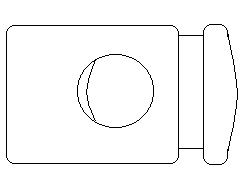
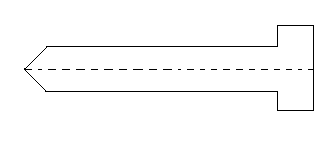
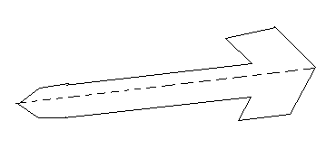
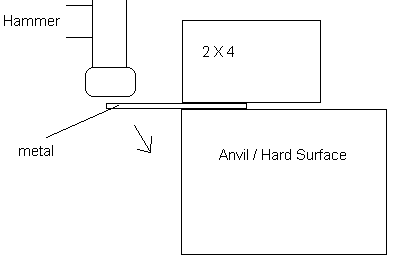
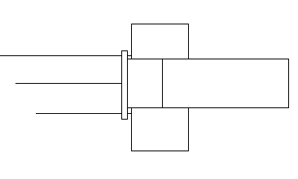
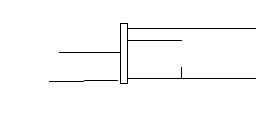
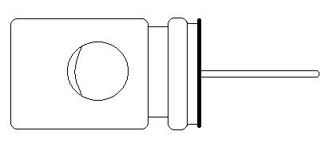
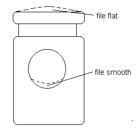
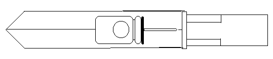

|
Have you seen the trip-line triggered perimeter flare launchers sold by companies like Brigade Quartermaster? These gadgets hold a 12 gauge flare shell and have a spring-loaded firing pin. An intruder walks past, hits a trip-line, which pulls a retaining pin. The firing pin is released to strike the shell's primer- Bang! Whoosh! Let there be light! Cute gadgets. I like them I don't like the commercial price. So you know me - Let's make a poor man's version of this thing. As usual, you need to gather some materials; nothing fancy, you probably have the stuff laying around, or can get it quickly. Materials
Spring-loaded drawstring keeper

Wooden, plastic, or metal dowel
Glue Cord for your tripline And of course, a 12 gauge flare (an expended one, for construction) Getting Started First, we're going to make something that looks rather mundanely like a tent stake, using the sheet metal. Do this by cutting the metal into a skinny 'T' shape with a pointed end. Metal shears, tin snips, or even a jigsaw will do the job. You'll want to file the edges smooth when you're done.
 Just you'll know, the pointy end is going to be a stake. The cross-member tabs on top will hold the flare shell when we're done. Next, we need to put a length-wise crease in the stake.
 This makes the stake more rigid, and creates a 'pocket' to help hold the gadgets we'll be placing in this stake. Unless you have a sheet metal brake, your best bet is an anvil, or other hard surface/object, and a hammer. Place the metal on the hard edge, centered length-wise. You may also want to place a board on the portion of the metal resting on the hard surface, like so:
 Hammer down the metal portion extending into the air, to form a 90 degree angle. Time to get the flare holder ready. Take the expended shell (Obligatory Safety Warning! - If you do this with a live shell, you should probably never read any of my articles without sane supervision.), or better yet a wooden dowel of similar diameter as a shell, and set it in the 'vee'.
 Bend the metal tabs around the shell. With lighter gauge metal, pliers should work. Heavier gauge metals may require you to tap the tabs into place with a hammer. For final fitting, remove the shell, and constrict the tabs just a little more. The idea is for a shell to fit tightly, but the tabs will not extend completely around the shell. If they did, loading and unloading would be tough. For firing, you'll likely want to secure the shell with duct tape.
 The shell should slide into the tabs like a finger into a ring. Moving to the firing assembly, get your keeper and nail. File the point of the nail just enough so that it isn't a sharp point; you're making a firing pin, and would prefer to not puncture the primer. Now glue the head of the nail to the keeper. A good household adhesive or epoxy is called for. This gadget is for use outdoors; water soluble construction is a bad idea.
 Two points about the keeper. The top where you want to glue the nail may be rounded. If the curvature is bad enough that you have difficulty getting the nail to sit straight, file the curve flat. The interior portion of many keepers, where the cord would normally go, often has a small ridge meant to maintain a good grip on the cord. Since we'll be putting a retaining pin in there which we want to pull free easily, file down any ridge.
 When the glue has set completely, check for the firing pin alignment with the shell primer. Unless you found a particularly large keeper, its diameter is too small to center the firing pin correctly. You can correct this by wrapping the keeper body with duct tape until it's big enough. You'll have to cut a small hole in the tape where the retaining pin enters the keeper. Side Note: Possibly you won't find a keeper with a spring stout enough to fire a primer. Look at the construction of that keeper. Think you could be creative and rig something with a small tube - pen barrel, PVC pipe, et cetera - and a good spring? We're ready for final assembly. Compress the keeper/nail firing assembly and insert the retaining pin. This cocks the firing assembly. With an expended shell in the tabs, place the firing assembly into the vee groove of the stake. Position the firing assembly so that the nail is near but not touching the flare shell primer. You want the cocked firing pin to not touch the primer, but close enough that the pin will solidly strike the primer when the retaining pin is released.
 Fasten the firing assembly firmly in place with duct tape. Again, cut a retaining pin access hole in the tape. Alternatively - and if your keeper didn't need the duct tape diameter boost - you might want to use epoxy for the job, if you can prevent any epoxy from getting into the keeper mechanism and seizing it up. Your perimeter flare alarm is finished. Tie a trip-line to the retaining pin, make sure it's cocked, put a live flare in it, stick the stake into the ground, and give it a tug - Bang! Whoosh! Pretty light! Other Notes Please note that if you were to place the stake at an angle too close to parallel to the ground, and accidentally inserted a standard 12 gauge shotgun shell, you will have made an improvised mini-claymore, which would be hazardous to the health of intruders. You'd want to be very careful where you pointed that sucker.<G> The claymore effect would be enhanced slightly by wrapping the shell body in tape. But shotgun shells can hold stuff besides shot. If you were to empty a shell of the leaden payload and substitute cayenne pepper, you'd annoy the hell out of unwelcome visitors. I suppose paintballers, in groups that allow such things, might want paintball claymores. I haven't tried that; I imagine you'll either have to go primer-only, or a very reduced powder charge, so the balls don't rupture on firing. And, like my old paper shotguns, there's no reason you can't scale this to other shell sizes and cartridge calibers. One of these rigged with those 8 and 9 millimeter stage blank cartridges would make a nice audible alarm for daytime. And be less likely to set the woods on fire than a flare. You may have wondered if you could take a shortcut in construction by starting with a sheet metal tent stake. Sure. Go for it; I've seen stake designs that adapt quite readily. Be Creative!
Did you like this article?
|